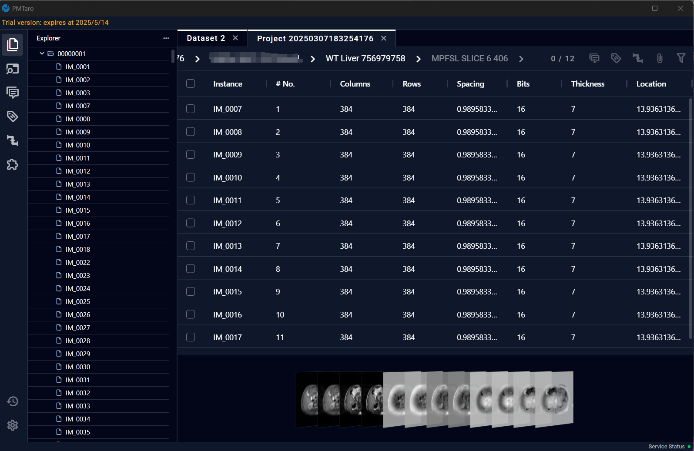
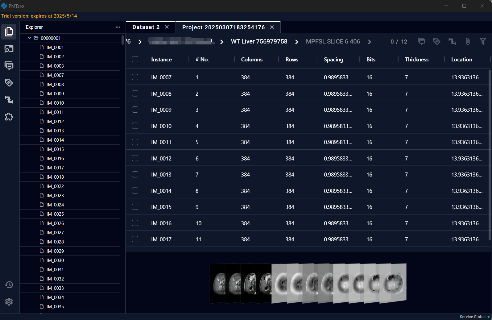

4.3 Dataset Detail Page
The Dataset Detail Page will provide a detailed display of the data information within the dataset and offer image previews.

The Dataset Detail Page will provide a detailed display of the data information within the dataset and offer image previews.
